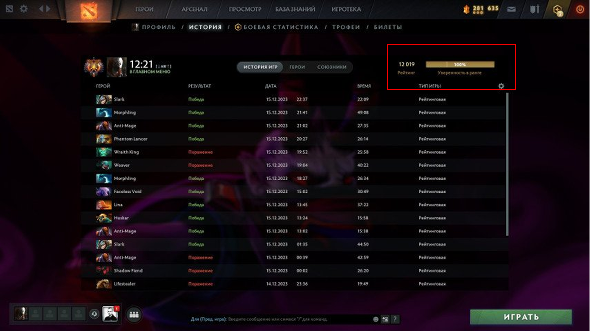
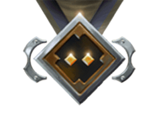
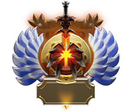

MMR: Основной показатель вашего уровня игры, который увеличивается за победы и уменьшается за поражения.

MMR преобразуется в медаль.
Рекрут

Страж
Рыцарь
Герой
Легенда
Властелин
Божество

Титан
Каждый ранг, кроме «Титана», имеет 5 звёзд, показывающих прогресс внутри ранга
0
154
380
462
616
Чтобы получить Титана, необходимо достичь 5620+ MMR . После достижения этого значения ваш ранг будет отображаться в виде позиции в региональной таблице лидеров.
Региональные таблицы лидеров можно посмотреть на официальном сайте Dota 2 или на сайте дотабаффа.
Калибровка: Раз в полгода игроки проходят калибровку – серию матчей, которая определяет новый ранг на основе их текущей игры.